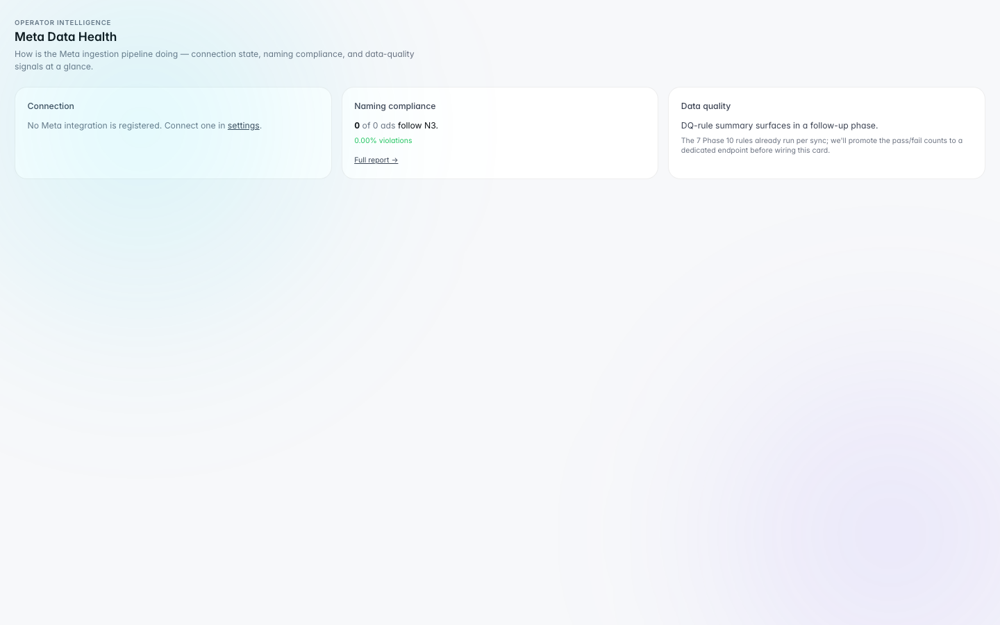

Creative angle ranking
Ranks angles, concepts, and formats by performance against business KPIs and funnel stage goals.
Featured case study
AI Agents for Campaign Intelligence & Creative Decision-Making
AI-powered assistants designed to help creative and media teams analyze campaign signals, rank creative angles, identify winners, and support faster performance decisions — with structured segmentation across markets, products, and placements.
Creative teams were overloaded with noisy campaign data and lacked a structured way to identify which creative angles, concepts, formats, and messages were working across markets, products, and placements. Manual analysis was slow, inconsistent, and created misalignment between creative strategists and media buyers.
Designed AI agents that analyze campaign performance data, creative metadata, naming convention fields, funnel stages, and business rules to surface actionable insights for creative and media buying teams. Agents rank angles, flag fatigue, segment by product and market, and deliver daily checkpoint summaries — all within a reviewable dashboard layer.
From raw campaign data to ranked creative recommendations teams can act on.
Meta Ads metrics, creative metadata, naming fields, funnel stage tags, and product/market context.
Group by product, market, placement, and creative angle — reduce noise before analysis.
Rank creative angles, detect fatigue, classify winners/losers, and evaluate funnel-level performance against business rules.
Surface prioritized insights, placement quality scores, and checkpoint summaries for creative and media teams.
Creative strategists and media buyers align on next steps — scale winners, refresh fatigued angles, adjust placements.
Creative intelligence and agent views from the Rescale Operator platform.

Central view for agent-driven creative analysis — angle ranking, recommendations, and daily intelligence.

Performance breakdown by creative angle, concept, and format — segmented for faster decision-making.

Identifies scaling opportunities and expansion candidates across products and markets.

Prioritized recommendations delivered each morning — winner/loser calls, fatigue alerts, and action items.

Single view connecting creative intelligence, winner detection, and daily checkpoints for cross-team visibility.

Meta health monitoring and placement-level quality signals to inform creative and media strategy.
Ranks angles, concepts, and formats by performance against business KPIs and funnel stage goals.
Breaks performance down by funnel stage to identify where creative is winning or leaking.
Filters and compares creative performance across products, markets, and audience segments.
Classifies creatives using spend, ROAS, and threshold rules — surfaces scale and kill candidates.
Detects declining performance patterns before teams over-invest in tired creative.
Morning intelligence briefs with prioritized actions for creative strategists and media buyers.
AI Product & Automation Builder — defined agent workflows, creative KPI logic, ranking criteria, and business rules. Created UAT requirements, dashboard views, and stakeholder feedback loops so creative and media teams could trust and adopt the system.
Worked cross-functionally to align naming convention fields, funnel definitions, and performance thresholds with how teams actually make creative decisions — then validated outputs through structured review cycles before production rollout.
I build AI agents that turn noisy campaign data into structured creative intelligence — ranking, segmentation, and daily decisions teams can trust.
Creative Marketing Agents operate within the broader Rescale Operator platform — see the full operating system case study for signal inbox, naming QA, launch readiness, and human-in-the-loop review.
View Rescale Operator case study